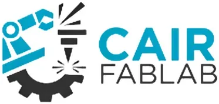

UP Mindanao CORSAIR — AI & Robotics FabLab
University of the Philippines Mindanao (UP Mindanao) · Region XI
Host-office logo (UP Mindanao Office of Research) — CORSAIR FabLab has no dedicated page.
- Category
- Fabrication Laboratory (FabLab)
- Host institution
- University of the Philippines Mindanao (UP Mindanao)
- City
- Mintal, Davao City
- Region
- Region XI
- Operating status
- Operating
About the Center
CORSAIR (Center of Research Supporting AI and Robotics) is an AI and Robotics FabLab established at the University of the Philippines Mindanao (UP Mindanao) in Mintal, Davao City. Developed through a Memorandum of Agreement signed in 2024 with DTI Region XI, CORSAIR expands the Center for the Advancement of Research in Mindanao (CARIM), providing a dedicated facility for AI-integrated prototyping, robotics development, and digital fabrication.
Located within one of Mindanao's premier research universities, CORSAIR bridges the gap between advanced research in artificial intelligence and robotics and practical product innovation, serving UP Mindanao students, faculty, researchers, and MSMEs in the Davao Region.
Programs & Services
- AI-Integrated Prototyping — Development of AI-enabled products and prototypes using fabrication equipment and computational tools
- Robotics Development — Fabrication and testing support for robotics projects, components, and systems
- 3D Printing — Rapid prototyping for engineering, design, and research applications
- Research Support — Fabrication and computational resources for academic research projects at UP Mindanao
- MSME Innovation Support — Access to digital fabrication technology for Davao Region enterprises developing tech products
- Collaboration with CARIM — Integration with UP Mindanao's Center for the Advancement of Research in Mindanao for broader research-to-market support
Contact
Sources & references
- upmin.edu.ph/up-mindanao-showcases-campus-innovations-to-regents-and-officials
- upmin.edu.ph/state-of-the-university-report-19-november-2024
Details are drawn from public records and the sources above, July 2026.
Startupreneur Innovation Hub · synced from the Notion catalog (July 2026) · status: published.